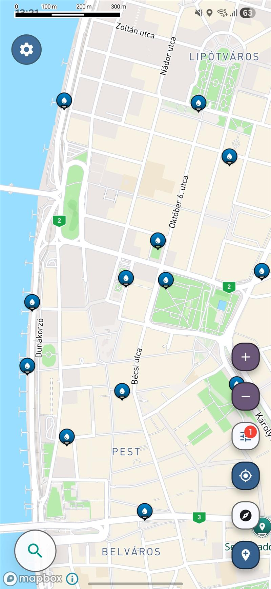

Mappa utile per i viaggi
Trova acqua potabile gratis ovunque
Rimanere senza acqua a metà viaggio è già abbastanza frustrante, ma quando i punti di rifornimento sono nascosti, non aggiornati o semplicemente non compaiono sulla mappa, è ancora peggio.
Gratis · iOS e Android

Screenshot from the Voyager Maps app showing nearby drinking water locations.
Perché trovare acqua gratis è ancora più difficile di quanto dovrebbe essere
- I punti di acqua potabile gratuita sono spesso nascosti nei parchi, nelle stazioni, negli edifici pubblici o nei punti di ricarica che non vengono mai indicati chiaramente.
- Spesso i viaggiatori perdono tempo a comprare acqua in bottiglia perché non riescono a verificare velocemente dove ci sono punti di rifornimento nelle vicinanze.
- Le app di mappe generiche raramente si concentrano sull’accesso pratico all’acqua quando ne hai bisogno in fretta durante una passeggiata, un viaggio in auto o uno spostamento in città.
Un modo più pratico per trovare i punti di rifornimento più vicini
L'app ti aiuta a trovare luoghi selezionati in base alle tue reali esigenze, non semplici risultati di ricerca generici. Invece di scorrere una lista di posti non pertinenti, puoi concentrarti su ciò che conta davvero quando hai bisogno di acqua in fretta.
Punti di rifornimento, rubinetti e punti di accesso all’acqua utili, selezionati per le tue reali esigenze di viaggio.
Pensata per accompagnarti mentre cammini, cambi mezzo, guidi o esplori zone che non conosci.
Mette in evidenza i luoghi che spesso mancano o sono nascosti sulla maggior parte delle mappe.
Scopri altre località nelle vicinanze
Apri l’app per scoprire altri punti dove trovare acqua vicino a te.
Mappa dell’acqua potabile per viaggiatori, escursionisti e chi viaggia in auto
Una buona mappa dell’acqua potabile ti aiuta a fare una cosa semplice più velocemente: trovare acqua potabile gratis senza dover tirare a indovinare. Quando viaggi, esplori una nuova città o passi lunghe ore in viaggio, non è sempre facile individuare punti di rifornimento affidabili. Rubinetti pubblici, stazioni di ricarica per bottiglie e altre fonti d’acqua gratuite possono trovarsi nelle vicinanze, ma spesso sono sparse tra diverse app, nascoste nelle recensioni o non evidenti in una normale ricerca su mappa.
Questa pagina è pensata per chi cerca una mappa dell’acqua potabile che metta al centro l’accessibilità pratica. Invece di affidarti ai risultati generici, puoi usare un approccio più orientato al viaggiatore per scoprire punti dove trovare acqua potabile gratis che ti siano utili mentre sei in giro. Che tu voglia riempire una bottiglia prima di un viaggio in treno, evitare di comprare bottiglie di plastica in più durante una passeggiata in città o trovare dell’acqua durante una sosta in un viaggio in auto, l’obiettivo è semplice: accedere più velocemente ai punti di rifornimento d’acqua utili vicino a te.